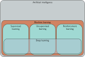
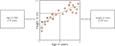
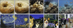

Introduction
How to Reach Me
Office: Riley Hall 200-H
Email: fahad.sultan@furman.edu
I don’t hold fixed office hours, but I’m available for on-demand meetings in real time. If you’d like to guarantee a time, you can schedule a meeting using this link. https://calendly.com/ssultan-dpq/15-minute-meeting.

About the Course
Course website: https://fahadsultan.com/csc272
The Syllabus is available on the course website. In particular, please make sure to read the Grading, Academic Integrity and Textbook and other Resources sections carefully.
All of the course content will be posted on this website.
Important announcements will be made on both the course website homepage and in class.
You are to submit assignments and exams on the course Moodle page. I will also upload all of your grades there.
Class Participation
Given the glut of information accessible online and otherwise in this day and age, meaningful interactions with your peers and teachers is essentially why you are paying your college tuition.
To encourage this, I have allocated 5% of your course grade to class participation. Ways to earn class participation points include:
- Coming to class and labs regularly
- Asking questions during class
- Sharing your thoughts and comments during class discussions
- (Optional) Answering questions during class
Class participation is somewhat subjective, but I will do my best to be as fair as possible. I will share your overall class participation points with you with each graded exam.
Exams
There will be three exams in the course, including the final. The final exam will be cumulative. Exams constitute 60% of your course grade.
All exams will be on paper and closed-book. Exam 3 will be on the last day of class.
The finals week will be used for project presentations.
Giant Asterisk *
Everything is tentative and subject to change
Types of Learning
Machine learning is an area of artificial intelligence that fits mathematical models to observed data.
Machine learning can be broadly categorized into three main types based on the learning signal or feedback available to the learning system.
These types are:
- Supervised learning
- Unsupervised learning
- Reinforcement learning
As of August 2026, the cutting-edge methods in all three areas rely on deep learning.

Supervised Learning
Regression and classification problems. a) This regression model takes a vector of numbers that characterize a property and predicts its price. b) This multivariate regression model takes the structure of a chemical molecule and predicts its freezing and boiling points. c) This binary classification model takes a restaurant review and classifies it as either positive or negative. d) This multiclass classification problem assigns a snippet of audio to one of N genres. e) A second multiclass classification problem in which the model classifies an image according to which of N possible objects it might contain.

Regression
Classification
Machine Learning Models
Machine learning model. The model represents a family of relationships that relate the input (age of child) to the output (height of child). The particular relationship is chosen using training data, which consists of input/output pairs (orange points). When we train the model, we search through the possible relationships for one that describes the data well. Here, the trained model is the cyan curve and can be used to compute the height for any age.

Deep Neural Networks
Structured Outputs

Unsupervised Learning
Generative Models


I was a little nervous before my first lecture at the University of Bath. It seemed like there were hundreds of students and they looked intimidating. I stepped up to the lectern and was about to speak when something bizarre happened.
Suddenly, the room was filled with a deafening noise, like a giant roar. It was so loud that I couldn’t hear anything else and I had to cover my ears. I could see the students looking around, con- fused and frightened. Then, as quickly as it had started, the noise stopped and the room was silent again. I stood there for a few moments, trying to make sense of what had just happened. Then I realized that the students were all staring at me, waiting for me to say something. I tried to think of something witty or clever to say, but my mind was blank. So I just said, “Well, that was strange,’ and then I started my lecture.
Conditional text synthesis. Given an initial body of text (in black), generative models of text can continue the string plausibly by synthesizing the “missing” remaining part of the string. Generated by GPT3 (Brown et al., 2020).

Variation of the human face. The human face contains roughly 42 muscles, so it’s possible to describe most of the variation in images of the same person in the same lighting with just 42 numbers. In general, datasets of images, music, and text can be described by a relatively small number of underlying variables although it is typically more difficult to tie these to particular physical mechanisms. Images from Dynamic FACES database (Holland et al., 2019).
Latent Variables
Latent variables. Many generative models use a deep learning model to describe the relationship between a low-dimensional “latent” variable and the observed high-dimensional data. The latent variables have a simple probability distribution by design. Hence, new examples can be generated by sampling from the simple distribution over the latent variables and then using the deep learning model to map the sample to the observed data space.

Image interpolation. In each row the left and right images are real and the three images in between represent a sequence of interpolations created by a generative model. The generative models that underpin these interpolations have learned that all images can be created by a set of underlying latent variables. By finding these variables for the two real images, interpolating their values, and then using these intermediate variables to create new images, we can generate intermediate results that are both visually plausible and mix the characteristics of the two original images. Top row adapted from Sauer et al. (2022). Bottom row adapted from Ramesh et al. (2022).
Multiple images generated from the caption “A teddy bear on a skateboard in Times Square.” Generated by DALL·E-2 (Ramesh et al., 2022).
Reinforcement Learning

Policy networks for reinforcement learning. One way to incorporate deep neural networks into reinforcement learning is to use them to define a mapping from the state (here position on chessboard) to the actions (possible moves). This mapping is known as a policy.